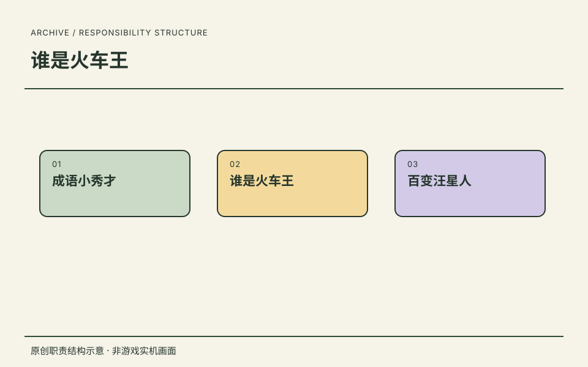
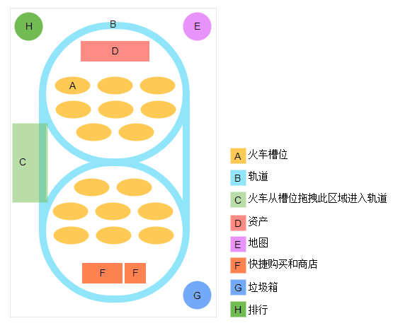
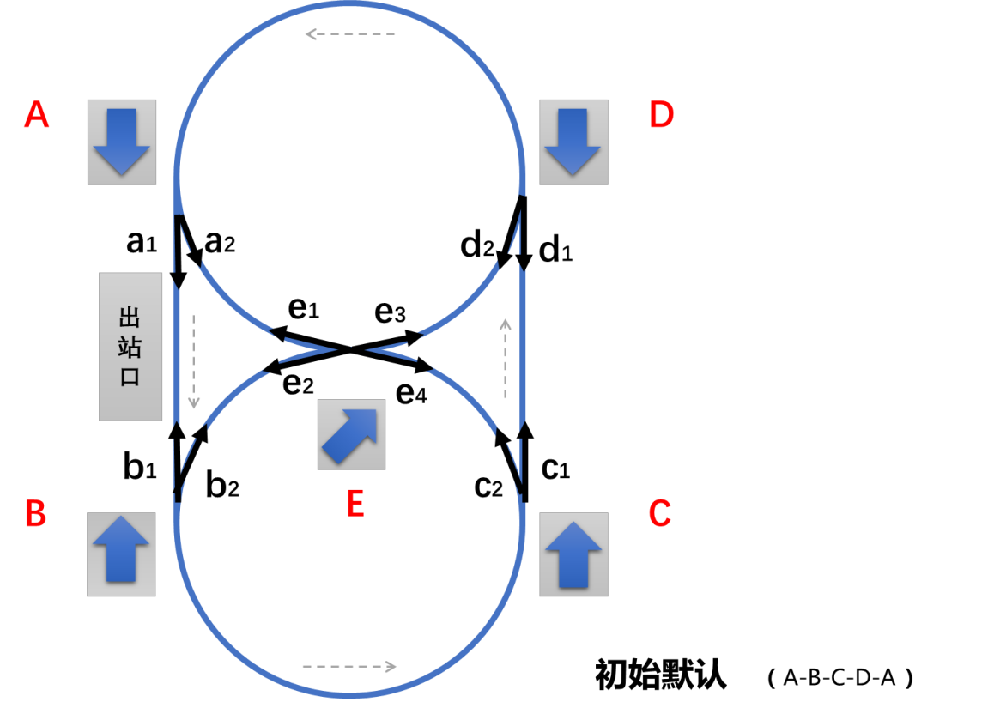
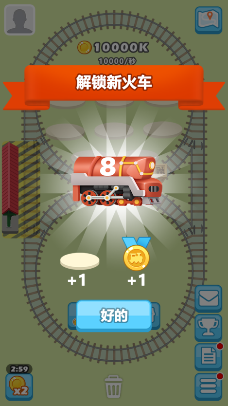
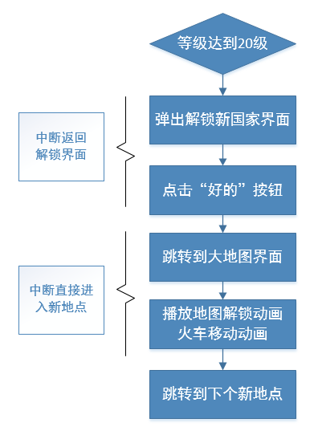
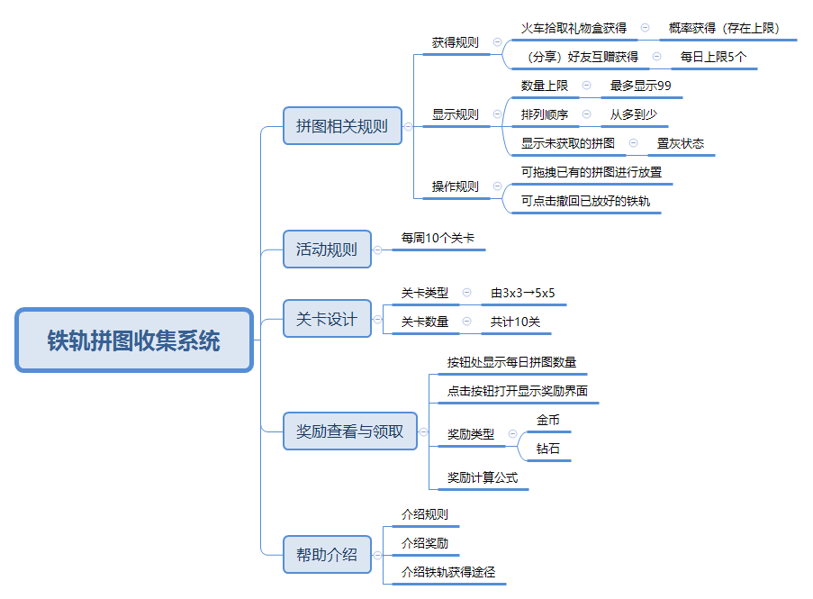
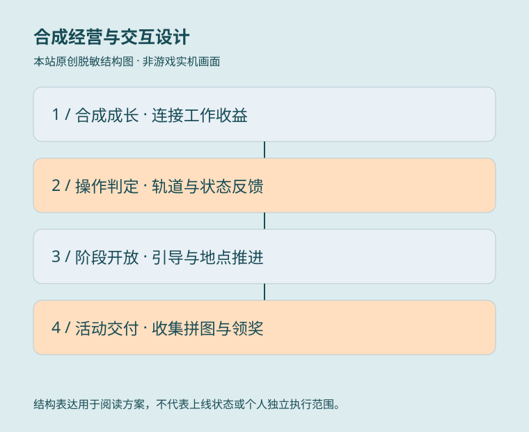

08 / 项目卡带档案 · PROJECT 02
谁是火车王.
主策划
以主策划身份参与；通过 Train 项目的合成经营、轨道控制、阶段引导与拼图活动资料，展示规则、界面状态和交付表达。
任职角色沿用履历记录；具体贡献按项目资料区分，共同职责不逐项归为单个项目的独立成果。
01
合成经营与轨道玩法的规则表达
- 具体工作
- 核心功能资料定义火车合并、交换、上轨与下架的状态，并通过轨道节点和路线切换规则说明玩法联动。
- 工作价值
- 将玩法拆为可实现、可讨论的规则与反馈，为程序和测试提供共同依据。
核心玩法与 UE ↗02
引导、成长与活动的交付表达
- 具体工作
- 分阶段教学连接合成和经营；地点流程覆盖中断恢复，铁轨拼图连接收集、关卡与奖励，并列出交互与美术需求。
- 工作价值
- 体现从体验路径到界面状态、资源需求和异常分支的策划交付；不把历史设计目标写成业绩。
活动与交互案例 ↗
职责依据本人履历与确认；原图补充设计证据，经营结果另行说明来源与口径。

原创职责结构示意 · 非游戏实机画面ROLE / 我的角色主策划
以主策划身份参与；通过 Train 项目的合成经营、轨道控制、阶段引导与拼图活动资料，展示规则、界面状态和交付表达。
CAREER / 项目记录任职记录
以主策划身份参与《成语小秀才》、《谁是火车王》、《百变汪星人》。
这里保留任职角色与项目记录。
RECORD / 可追溯记录项目记录
《谁是火车王》列于这段任职经历中。
- 任职公司
- 北京豪腾嘉科科技有限公司（疯狂游戏）
- 角色
- 主策划
- 时间
- 2018.02—2019.08
任职、角色与职责依据本人履历及确认。图示是本站原创的职责结构表达。
DESIGN JOURNAL / 方案摘要
项目方案.
读背景、职责、方案与可证实产出。
本页按用户最新确认采用 Train 项目资料，已撤下此前误关联的 Goose 养成方案。个人岗位沿用已确认履历；选中文档未发现明确个人署名，不据目录归属认定独立作者，团队美术与程序不归为个人执行。
合成经营：规则与界面一起交付

项目文档原图 · 历史设计参考 · 非上线证明查看原图（可缩放） ↗展开原尺寸图
设计问题
怎样将合成、工作收益和商店购买组织成可操作的成长循环？
产出与工作价值
以核心 UE 图连接槽位、轨道、资产与商店，配套状态和读表规则，体现系统设计到 UI/UE 交付的完整表达。
关键方案
- 区分闲置与工作状态，定义同级合并、异级交换、上轨、下架与删除的操作判定。
- 针对轨道容量、槽位已满、金币不足和无效拖拽提供禁用、回退与提示，避免界面表现和规则脱节。
来源：核心功能文档。新项目策划文档后续增加材料阶段并删除快捷购买，图中旧入口按历史版本阅读。
轨道控制：把玩法拆成状态与路径

项目文档原图 · 历史设计参考 · 非上线证明查看原图（可缩放） ↗展开原尺寸图
设计问题
交叉轨道和多个方向开关怎样形成程序可实现、测试可验证的规则？
产出与工作价值
交付轨道节点图与路线切换规则；正文“八种”与实际六类路线列表存在不一致，不将文档当成最终验收结果。
关键方案
- 将外环与上下内环的运动路径分别定义，并列出方向开关切换与中央节点的联动。
- 规定反向箭头置灰、可用方向点亮及自动响应，连接玩家操作、路线变化和视觉反馈。
来源：核心功能文档：火车跑圈逻辑、开关关联与箭头显示说明。
新手引导：随学习阶段开放功能

项目文档原图 · 历史设计参考 · 非上线证明查看原图（可缩放） ↗展开原尺寸图
设计问题
怎样让玩家先掌握合成，再进入经营与路线控制，而不是一次看到所有系统？
产出与工作价值
形成阶段化界面、触发条件、动画及文本需求，明确策划规则和美术资源的配合。解锁图来自较早核心文档，仅作界面参考，不冒充新版实机。
关键方案
- 通过材料合并、加速、转盘和购买教学组织前期体验，再开放火车工作、轨道控制与列车长。
- 分阶段隐藏与开放按钮，结合演示、小手、对话及实际操作判断推进；未执行关键操作时不自动跳过教学。
来源：新项目策划文档；核心功能文档：解锁界面。
地点推进与中断恢复

项目文档原图 · 历史设计参考 · 非上线证明查看原图（可缩放） ↗展开原尺寸图
设计问题
解锁、动画、地点切换与离线收益怎样衔接，退出后又应从哪里恢复？
产出与工作价值
用流程图与状态说明覆盖正常路径和退出恢复，降低前后端、UI 与测试对跳转结果的理解偏差。
关键方案
- 将解锁提示、地图解锁、火车移动与进入新地点串联；分别定义提示中断和动画中断后的恢复位置。
- 区分未解锁与未开放地点，规定默认页、返回原地点及动画期间的输入限制；不同地点独立计算资源。
来源：地点相关功能系统文档。后续新项目文档暂锁部分国家，不据旧图宣称所有地点开放。
铁轨拼图活动：收集、关卡与求助闭环

项目文档原图 · 历史设计参考 · 非上线证明查看原图（可缩放） ↗展开原尺寸图
设计问题
怎样让活动承接主玩法，同时把收集、拼图和奖励组织成清晰的体验？
产出与工作价值
形成系统结构、关卡梯度、交互与资源需求。文字与表格对关卡总量存在差异，不公开最终关卡数或概率；留存与分享提升仅为设计目标。
关键方案
- 将主玩法礼物盒与铁轨收集连接，再以摆放反馈、通路完成、领奖和下一关形成活动闭环。
- 细化缺失铁轨、分享求助选中前后状态、帮助限制、资源栏排序及美术动画需求。
来源：（活动）铁轨拼图玩法说明。文中“铁路大亨”“火车之旅”为阶段界面名称，不推定最终更名。
常驻任务与分享奖励的状态衔接
设计问题
地点成长和多种触发入口变化时，如何保持任务进度与奖励操作连贯？
产出与工作价值
将跨地点进度、领奖与分享触发写成可讨论的状态规则；历史分享方案不作为当前平台合规建议或实际增长证明。
关键方案
- 每日任务随最高解锁地点迁移，保留未完成、进行中和待领奖状态；区分不可领取、可领取与已领取按钮。
- 免费升级分享区分购买、合并和箱子来源，规定触发限制、动画顺序与取消后返回商店，避免打断原操作后无处返回。
来源：每日任务系统文档、（分享4）免费升级火车功能文档说明。
来源范围：用户指定 Train 目录的六份功能文档。完整原件、经济与概率配置、统计、程序工程及含真人头像和第三方竞品参考图片未公开；设计目标与文档方案不直接认定为上线成果。

合成经营与交互设计 · 本站原创脱敏结构图PROJECT / 工作说明合成经营与交互设计
项目背景
合成、轨道经营与活动需要共用清晰的操作、成长与奖励反馈。
本人职责
主策划岗位与项目参与沿用已确认履历；文档未发现明确个人署名，不据目录认定全部独立撰写。
关键方案
拆解火车状态与拖拽判定、轨道开关联动、分阶段引导、地点恢复及活动收集领奖。
可证实产出
形成 UE、节点与流程图，以及功能、资源和异常状态说明；不同版本方案分开阅读，不作为上线或增长证明。
摘要依据：用户最新确认的 Train 项目资料：核心功能、新项目策划、地点推进与铁轨拼图等文档。按用户最新指正采用 Train 资料；此前 Goose 养成案不再作为火车项目证据。美术参考与策划贡献区分，原件和配置不公开。
放大流程图 ↗阅读文档摘要 ↗ 在页面内阅读流程图＋
可滚动阅读大图；也可打开流程图缩放。下方文字提供同等内容。